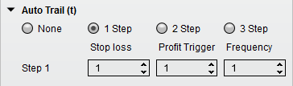
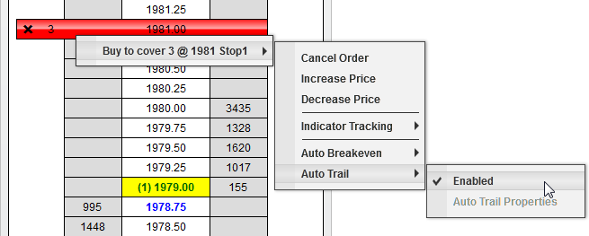
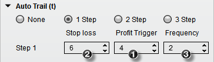
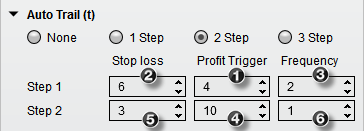

|
<< Click to Display Table of Contents >> Auto Trail |


|
Auto Trail
|
<< Click to Display Table of Contents >> Auto Trail |
|
Auto Trail is a powerful stop strategy that allows you to be more liberal with your Stop Loss at the early stage of your trade and tighten your Stop Loss as your profits in your trade increase.
Understanding the Auto Trail parameters
Auto Trail Parameters

There are 3 available steps for Auto Trail parameters. Each step can have unique parameters providing you with the flexibility to tighten your Stop Loss automatically as your profits increase. Auto Trail can be set before entering a position as part of a Stop Strategy. You can also enable or disable it on a working Stop Loss order.
If you move your mouse over an active Stop Loss order in the buy cell for a buy order or sell cell for a sell order and press down on your right mouse button, you will see a menu of all working orders. Each working order menu has a sub menu that displays any applicable strategies that can be enabled or disabled. In the image below, you can see that Auto Trail is currently enabled. By selecting the "Enable" menu item, you can enable or in this example disable the Auto Trail. You can change the parameters by selecting the "Auto Trail Properties" menu item when Auto Trail is disabled.
 |
Auto Trail Example #1:The settings in the image below are saying:
1."Once our trade has 4 ticks in profit..." 2."...move our Stop Loss back 6 ticks..." 3."...and also move it up for every additional 2 ticks in profit."

Average Entry - 1000 Long (SP Emini contract)
The market moves up to 1001 and the Auto Trail is triggered (Average Entry + Profit Trigger = 1000 + 4 ticks = 1001) and the Stop Loss is adjusted to 999.50 (1001 - Stop Loss = 1001 - 6 ticks = 999.50). For every additional 2 ticks (Frequency of 2 ticks) the Stop Loss will be adjusted by 2 ticks.
Auto Trail Example #2 building on top of Example #1:The settings in the image below are saying: 1."Once our trade has 4 ticks in profit..." 2."...move our Stop Loss back 6 ticks..." 3."...and also move it up for every additional 2 ticks in profit." Step 2 4."Then once our trade has 10 ticks in profit... 5."...tighten and move our Stop Loss back 3 ticks..." 6."...and increase the rate at which the Stop Loss is adjusted and move it up for every additional 1 tick in profit."

Average Entry - 1000 Long (SP Emini contract)
The market moves up to 1001 and the Auto Trail is triggered (Average Entry + Profit Trigger = 1000 + 4 ticks = 1001) and the Stop Loss is adjusted to 999.50 (1001 - Stop Loss = 1001 - 6 ticks = 999.50). For every additional 2 ticks (Frequency of 2 ticks) the Stop Loss will be adjusted by 2 ticks (same as Example #1). Then the market moves to 1002.50 and the 2nd step of the Auto Trail strategy is triggered and the Stop Loss is adjusted to 1001.75 and moves up by 1 tick with every additional tick in profit. |